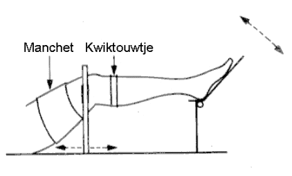

De druk-volume relatie wordt gefit middels de volgende formule

dV/V = gemeten volume verandering
k = a-lineariteit
C0 = helling (welke ?)
Pv = Berekende Druk bij het volume op t=0.5
P0 = Veneuze rustdruk

RF 2, Onset Systolische Bloeddruk
|
MIDAC REKENFUNCTIES |
MIDAC, rekenfunctie 44 |
|
|
Veneuze Weerstandsmeting Achtergrond Informatie |
Met de Veneuze Weerstandsmeting wordt de weerstand bepaald die het bloed ondervindt in het veneuze systeem in één van de extremiteiten.
|
|
|
|
De patient wordt in liggende positie gebracht, een cuf wordt om het bovenbeen geplaatst en een "kwiktouwtje" wordt net onder de knie aangebracht. (N.B. uit milieu oogpunt bevat het "kwiktouwtje" tegenwoordig geen kwik meer. |
 |
|
|
|
De cuf wordt snel opgeblazen tot een gedefiniëerde constante druk (hoger dan veneus, maar lager dan diastole).
Het volume van het been zal nu langzaam toenemen, omdat bij iedere systole extra bloed in het been gepompt wordt dat niet meer terug kan stromen.
Na enige minuten zal er een evenwicht ontstaan, het volume zal immers niet verder toenemen zodra de veneuze druk gelijk is aan de cuf-druk.
Na het bereiken van het evenwicht, wordt de cuff snel geopend, en wordt gemeten hoe snel de extra hoeveelheid bloed in de venen wordt weggewerkt (de patient moet hierbij zo stil mogelijk blijven liggen en mag hierbij zeker niet de pompfunctie in de benen activeren).
Een halve seconde na het openen van de cuff (dit om eventuele artefacten als gevolg van het openen van de cuff te omzeilen), wordt de helling van de plethysmograaf curve bepaald. Deze parameter heet de Venous Emptying Rate (VER) en wordt uitgedrukt in [%/minuut].
Onderstaande figuur geeft een voorbeeld van een meting van de Venous Emptying Rate, bij 1 druk.
Per meting worden de volgende parameters bepaald en opgeslagen:
Bij iedere druk wordt een meetpunt voor de druk-volume relatie bepaald:
Volumeverandering = volume vlak voor het openen van de cuffs - volume aan het einde van het leeglopen
Druk = druk vlak voor het openen van de cuffs * druk correctie factor
De druk correctie factor is noodzakelijk omdat de druk in de cuff altijd hoger is dan de druk in het veneuze systeem. Deze correctie factor is afhankelijk van de geometrie en samenstelling van het been en kan door een deskundige laborante worden ingeschat (default waarde = 0.8).
|
De druk-volume relatie wordt gefit middels de volgende formule dV/V = gemeten volume verandering k = a-lineariteit C0 = helling (welke ?) Pv = Berekende Druk bij het volume op t=0.5 P0 = Veneuze rustdruk |
|
Tijdens het snel leeglopen van de cuffs, kan de druk niet meer betrouwbaar worden gemeten met de drukopnemer. Vandaar dat het volume wordt gemeten en vervolgens wordt de druk bepaald uit de berkende druk-volume curve. Daarom lege alle meetpunten voor de VER bij een iets lagere druk dan de druk-volume punten.
Door bij een aantal drukken de VER te bepalen, wordt een relatie tussen VER en druk verkregen. De helling van deze grafiek is de Veneuze Weerstand.
Onderstaande curve wordt meestal voor beide benen tegelijkertijd bepaald en er wordt meestal uitgegaan van een vaste drukreeks (bijv. 15, 20, 25, 30, 35, 40 mmHg).
© Copyright Instrumentele Dienst, 1999 SM, last updated 13-10-1999
SM, last updated 13-10-1999